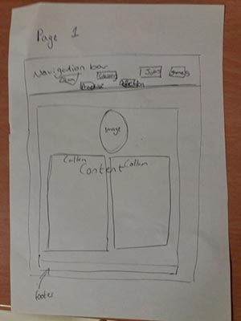
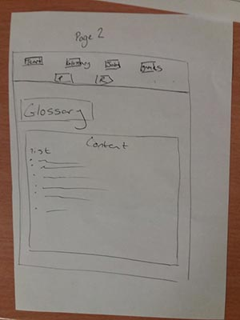
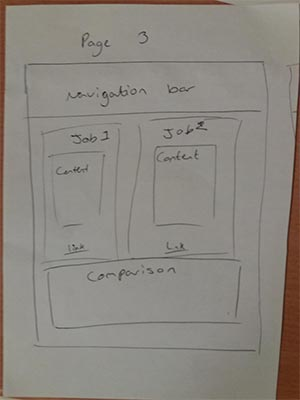
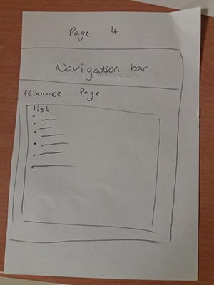
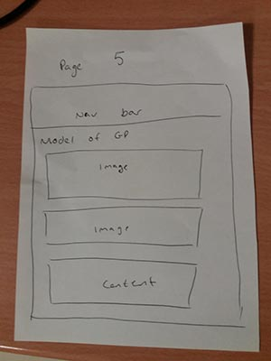
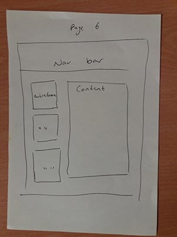
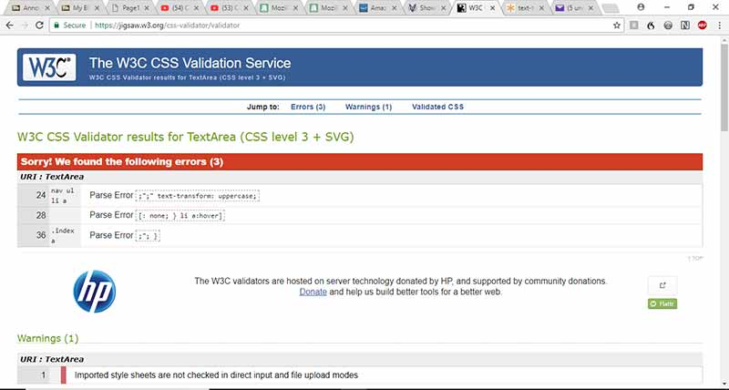
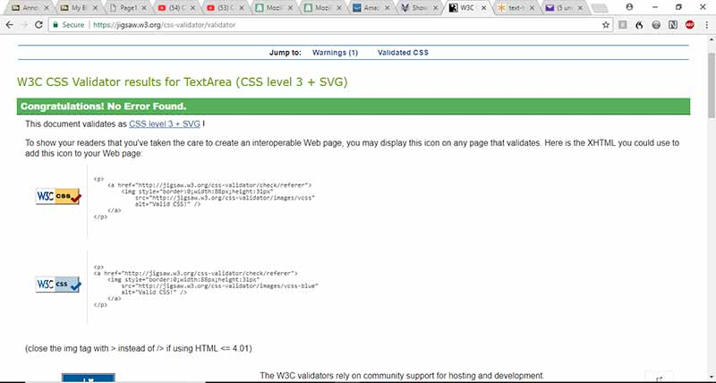

Learning web development At the beginning of this assignment I knew nothing about Web Development. I had seen I couple people I know why run their own websites do the coding, but I never knew what that meant. However, since I have started to learn about Web Development I realise that the basic part is very easy but pulling together all the information that I have been given has been difficult. I struggle with learning new things as it is so learning a new computer language was hard. I also did not help myself by leaving everything to do at the last minute. I know that I could have done more on my website, and with more time I would have been able to add so much more to my website. I am confident that I will not make this same mistake again and I will give it my all, 110%, from here on out. On the brighter side I have enjoyed a lot of learning about Web Development. I had no realised how big of an industry it was. There are so many things that I am still yet to learn, and I am willing to do so. I feel that the more I understand Web Development I more it will help me further down the line.
To start off my website I had to create wireframes so that I had a rough idea as to what my website was going to look like. There’s are my wireframes:
     Whilst making this website I also had to use the validators to make sure that there were not any errors in my work. I used validator.w3.org for my HTML and jigsaw.w3.org for my CSS. For this validation I had added semi-colons and question marks where they should not have been any. Once I had read through my code to one of my rubber ducks I had found the errors. After I had edited my mistakes my CSS came back with no errors.
 